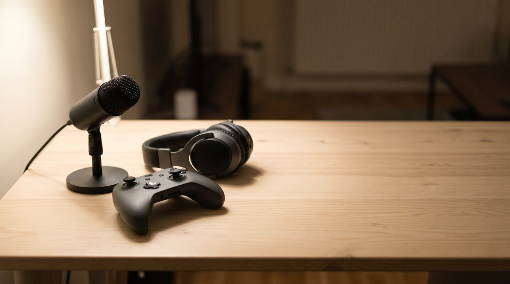
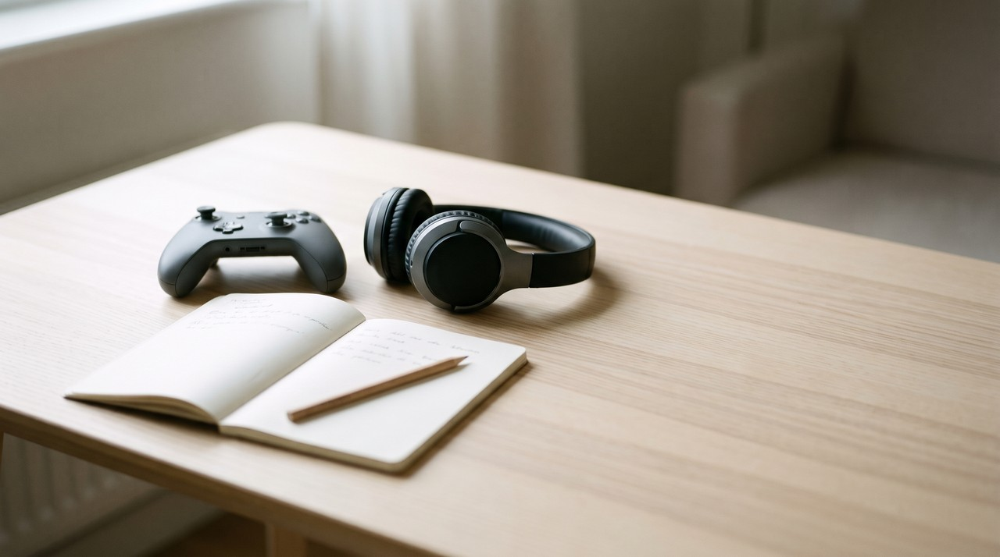
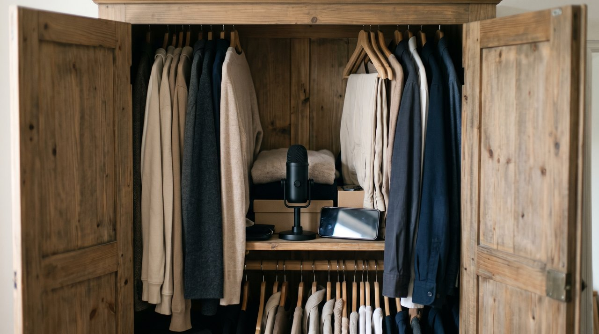

GTA 6 commentary in your own voice: a simple way to add it to clips, even without a quiet room

If you want to add GTA 6 commentary without ruining your focus while playing, play first and talk afterward. Record your clip, watch it once, write down one short note for each moment that matters, and then read those notes over the video as a voiceover. YouTube's own rule for game footage asks for commentary that explains what is happening on screen, so your voice is what turns raw gameplay into your own video.
| Way to add commentary | What you need | Good for | The catch |
|---|---|---|---|
| Talk live while you play | A headset microphone | Long playthroughs and streams | Your talking gets thin when the play gets hard |
| Voiceover after you play | Any microphone, even a phone | Short clips and Shorts | You need ten quiet minutes once the clip is cut |
| Typed lines in a clone of your own voice | A clean sample of your voice and an app | Fixing a line or a noisy day | The words still have to be yours, and it is English only in VoiceClone |
Written by Inam, an engineer in Pakistan who voices his own videos; the rest of my work is on designesh.com. VoiceClone is an app I make and sell, so weigh what I say about it with that in mind. Last updated 13 November 2026.
GTA 6 launches on 19 November, and a lot of people are planning to upload clips from day one. Almost all of those uploads will look the same, just a few seconds of gameplay with background music. If you want your video to stand out and stay safe under YouTube's rules, you need to add your own voice explaining the action.
Play first, talk afterward, and keep every line about what is on the screen. That is my entire approach in one sentence. Below, I will explain why commentary matters so much on YouTube, how to record it on a normal phone, and what you can do when your house is simply too noisy to record.
Why does commentary matter so much for GTA 6 videos?
YouTube has clear written rules for gaming videos, and your voiceover sits right at the center of them. According to YouTube's page on what you can monetize, if you do not have commercial rights from the game publisher, you can only use gameplay in small amounts unless your commentary provides instructional or educational value tied directly to the action. YouTube also warns that long stretches of plain, unedited gameplay may not be accepted.
YouTube's reused content rule says the exact same thing. Among the things it does not allow are moments edited together with little or no narrative. A video of a car crash with a song playing over it falls on the wrong side of that rule, but the exact same crash with your voice explaining what you tried to do and why it failed fits what YouTube wants to see.
You also have to look at Rockstar's rules. Their policy on posting Rockstar material allows cutscenes inside a longer playthrough or a narrated Let's Play, while standalone cutscene videos get taken down. Notice that Rockstar specifically mentions narration. Commentary does not give you permission to earn from the footage, because Rockstar defines non-commercial use as making no money from it, yet adding narration is still the clearest standard both companies look for.
What should GTA 6 commentary actually say?
Good commentary should never just describe things the viewer can already see. Anyone watching can tell that a car is on fire. What they cannot see is what was going through your head at that moment, so that is what you should talk about. Whenever I write notes for a clip, I make sure each line answers one of three things: what I tried to do, why I tried it, and what I would change next time.
Think about any short clip, say a chase that ends badly. Saying "and now I am driving away from the police" adds nothing because the viewer can already see it. Saying "I turned into the narrow street because I thought the bigger cars could not follow, and that was a mistake because it had no exit at the end" teaches the viewer something, which gives your video the instructional value YouTube asks for.
You do not have to sound like a comedian or shout into the microphone. A calm voice that explains your thinking works well. Even if your English is not perfect, do not worry about it, because viewers care much more about whether you understand the game than how your accent sounds.

How do you add commentary to a GTA 6 clip, step by step?
If I were starting a brand new GTA 6 channel today, this is the exact workflow I would follow. You only need a phone and a free video editor, and you never have to worry about talking while trying to play.
- Record your gameplay from your own copy using the capture button on your PlayStation 5 or Xbox Series X|S controller once the game unlocks on 19 November.
- Trim the video down to only the part worth watching, and watch it all the way through once with the sound muted.
- Write down one brief note for each important moment along with the timestamp, such as "0:12 why I took the side street".
- Expand each note into one or two spoken sentences, using the same plain words you would use when talking to a friend.
- Record your lines as a single voiceover track, or record one note at a time if that feels more comfortable.
- Drop both the video clip and your audio into a free editor like DaVinci Resolve, and lower the game volume whenever you speak so your voice stays easy to hear.
Writing notes beforehand might feel like an extra chore, but it actually saves a lot of time. When you try to improvise over a clip, you end up filling empty space with "so yeah" and "okay", which forces you to redo the recording four times. With written notes for each moment, one or two takes is usually enough.
How do you record commentary when your room is not quiet?
Finding a quiet place to record is a real struggle for many creators where I live. Whenever I record narration for my own videos, the hardest part is never writing the script, it is dealing with background noise like traffic outside, a motorcycle passing right in the middle of a good sentence, or a ceiling fan I forgot to turn off. A few simple habits will fix this much better than buying an expensive microphone.
- Hold the phone or microphone close to your mouth, roughly one hand's width away, so your voice stays much louder than the room around you.
- Record inside a small area surrounded by soft surfaces. A cupboard packed with hanging clothes works surprisingly well as a free recording booth.
- Switch off your ceiling fan for the few minutes you need to speak, and try recording early in the morning or late at night when the street outside is quiet.
- Record in short pieces, just one note per take, so a sudden noise outside only ruins a single sentence instead of the whole video.
- Save all your raw audio files. A recording with strong explanations and a tiny bit of background noise is much easier to clean up than crystal clear audio where you stumble over your words.

Can you use a clone of your own voice for GTA 6 commentary?
Yes, and it is especially handy for one specific task: fixing a single line. Suppose you finish editing your video and notice you missed an explanation, or a motorcycle ruined your best take. If you have a clone of your own voice, you can simply type out that missing sentence and drop the generated audio straight into your timeline without setting up your microphone again. I shared how I do this in using your own AI voice for YouTube, and the exact same process works for gaming videos.
YouTube is also reasonable about this specific use. On its page on altered or synthetic content, YouTube states that cloning your own voice for voiceovers or dubbing does not require disclosure, and standard video game footage is on that same list. Your own cloned voice reading words you wrote does not need the AI label. You only need to check that label when a video makes a real person look like they said or did something they never actually did.
Keep two strict limits in mind here. First, a voice clone only replaces the physical act of speaking into a mic, not the thinking behind it, so the script still needs to be your own explanation of the gameplay. Second, never clone a GTA 6 character's voice or anyone else's without their written permission. A character's voice belongs to a real performer, and I covered why copying it causes problems in why you should not clone a GTA 6 character's voice.
To get a natural sounding voice clone, you need a clean initial recording, so it helps to record your sample now before the game comes out. My recording tips walk through what kind of text to read and how long your sample should be.
What should you check before you upload GTA 6 commentary?
Adding your voice makes the video yours, but several mistakes can still get your upload taken down or blocked from earning ad revenue. Run through this quick list before publishing anything:
- Do not upload any footage before the game unlocks on 19 November, no matter where it came from, because Rockstar removes leaked pre-release videos.
- Do not post videos that consist only of a cutscene, the ending, or a major plot twist, and avoid uploading standalone clips of the in-game TV shows or comedy routines.
- Keep graphic violence out of the first 7 seconds of your video, because that opening is not eligible for ad money, and leave it out of your thumbnail too.
- Keep Rockstar logos, official cover art, and trailer screenshots off your thumbnails and channel banner.
You should also be careful about what you download while waiting for release day. Rockstar lists the game only for PlayStation 5 and Xbox Series X|S with no PC version announced, and security researchers have already found fake demos that steal passwords. Any site promising GTA 6 for PC, a demo or early access is a scam, so leave it at once.
Where does VoiceClone fit?
I built VoiceClone because I narrate my own videos and got tired of paying monthly fees just to generate my own voice. The tool runs GPT-SoVITS directly on your Windows 10 or 11 PC so your audio files never get uploaded to a server. Having an NVIDIA graphics card makes it generate much faster, though it will still run on a regular processor at a slower pace.
That said, it will not fit everyone's needs. VoiceClone is built for English, so if you want to record your commentary in Urdu, a basic microphone and a quiet cupboard will give you much better results. It also does not write scripts for you, and you should only ever clone your own voice or the voice of someone who has explicitly agreed to it.
The free tier lets you clone and fully train one voice a single time, and then generate 3 test clips so you can hear the quality for yourself. If it works well for your setup, the $49 one time license has no recurring subscription, and you can grab the free version from the download page.
FAQ
Do GTA 6 videos need commentary to be monetized on YouTube?
According to YouTube's guidelines on monetizing game content, if you lack commercial rights from the publisher, you should only use gameplay in short clips unless your commentary adds instructional or educational value connected to what is happening on screen. Adding commentary is the most direct way to satisfy that rule, although nothing guarantees monetization approval. Keep in mind that Rockstar's own policy still does not grant permission to earn money from their footage.
Can I record GTA 6 commentary after I play instead of live?
Yes, you can, and recording your voiceover afterward actually works better for shorter clips because you can review the footage first, jot down notes for key moments, and explain things calmly. Live commentary makes more sense for long playthroughs and livestreams.
Do I need to label my own cloned voice as AI on YouTube?
No, you do not. YouTube treats a clone of your own voice used for narration or dubbing as a minor edit that does not require disclosure, and standard video game footage falls into that same category. You only need to use the AI label when a video makes a real person appear to say things they never actually said.
Can I do GTA 6 commentary in Urdu with VoiceClone?
No, VoiceClone is designed for English, so it will not produce natural Urdu commentary. If you are making videos in Urdu, you will get much better results recording your own voice directly on a phone or a budget microphone in a quiet room.
Sources, read on 9 November 2026 and checked again on 13 November 2026: Rockstar's Grand Theft Auto VI page, its policy on posting copyrighted material and its platforms and editions page; YouTube Help pages on monetizing game content, reused content, altered or synthetic content and the advertiser-friendly guidelines update; Malwarebytes, August 2026. This is my reading and not legal advice.
Hear your own voice come back.
The free Windows app clones and fully trains one voice, yours, on your own PC. No account, no upload, and the download starts right away.